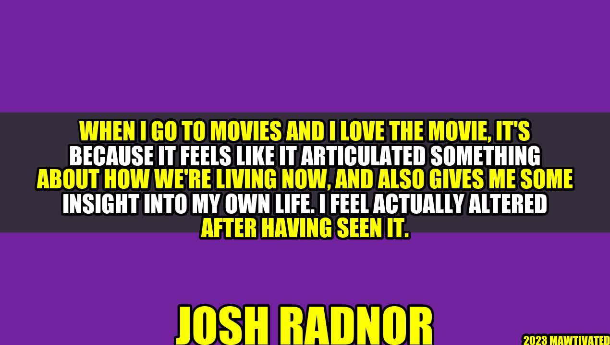

The Power of Articulating Something About How We're Living Now

Have you ever watched a movie that deeply resonated with you? A movie that left you feeling altered after having seen it? For me, it was when I watched the movie The Pursuit of Happyness, starring Will Smith. The story of a struggling single father who overcomes adversity to provide a better life for his son inspired me to never give up on my dreams, no matter how difficult they may seem.
Actor and director Josh Radnor once stated, "When I go to movies and I love the movie, it's because it feels like it articulated something about how we're living now, and also gives me some insight into my own life."
Radnor, best known for his role in the TV show How I Met Your Mother, has always been passionate about storytelling. He has written and directed several indie films, including Liberal Arts and Happiness Runs.
Examples of Movies That Articulate Something About How We're Living Now
- Dead Poet's Society: This movie teaches us to not conform to society's expectations and to follow our passions.
- Good Will Hunting: The story of a genius janitor who struggles with his identity and self-worth resonates with many people who feel stuck in their lives.
- Inside Out: This animated movie explores the complexities of our emotions and teaches us the importance of understanding and accepting them.
Recently, I watched the movie Wonder. The story of a young boy with a facial deformity and his journey of self-discovery deeply moved me. As someone who has struggled with body image issues, I found myself relating to the characters and their experiences. The movie not only provided insight into how we're living now, but also taught me to be kinder to myself and others.
Conclusion
- Movies have the power to articulate something about how we're living now and provide insight into our own lives.
- Watching movies can be a transformative experience that alters our perspectives and inspires us to be better.
- We should never underestimate the power of a good story and its ability to touch our hearts and minds.
Practical Tips
- Before watching a movie, think about why you chose it and what themes or messages it might contain.
- After watching a movie, take some time to reflect on what you learned and how it applies to your life.
- Share your thoughts and experiences with others, as movies can inspire meaningful conversations and connections.
- Keywords: movies, storytelling, insight, transformative, inspiration, themes, reflections, connections.
- Category: Arts and Entertainment
Hashtags: #movies #storytelling #insight #transformative #inspiration #themes #reflections #connections #ArtsAndEntertainment
Curated by Team Akash.Mittal.Blog
Curated by Team Akash.Mittal.Blog
Share on Twitter Share on LinkedIn